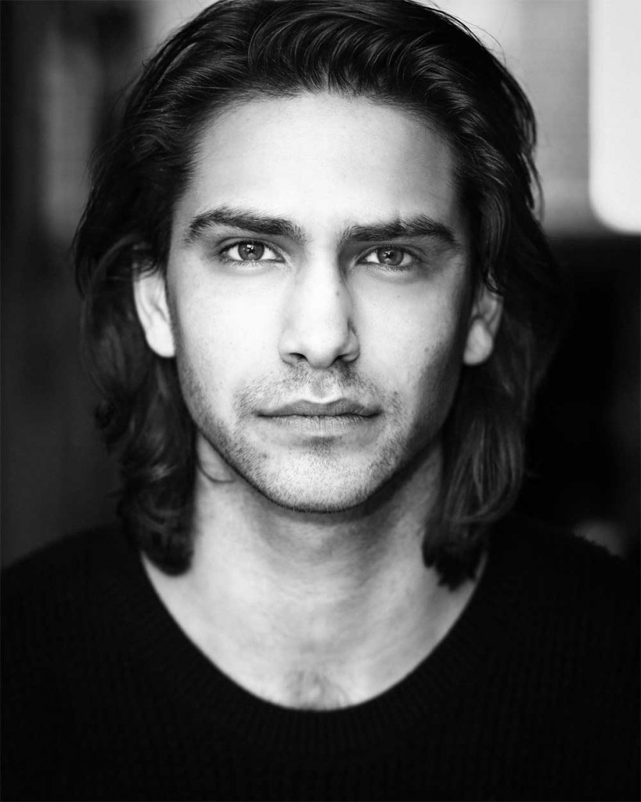
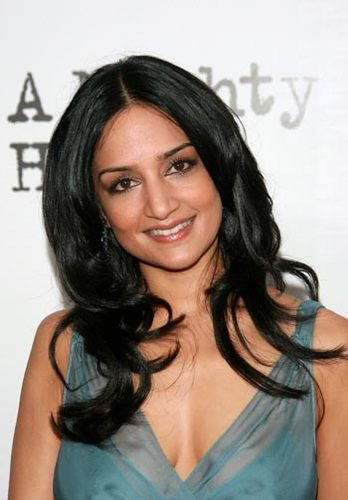
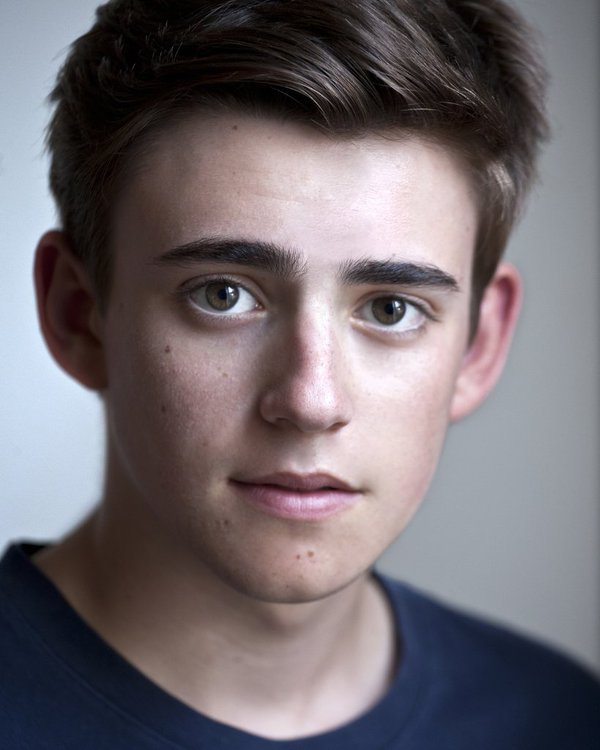
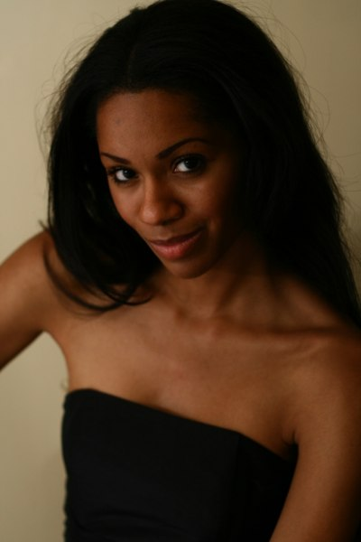
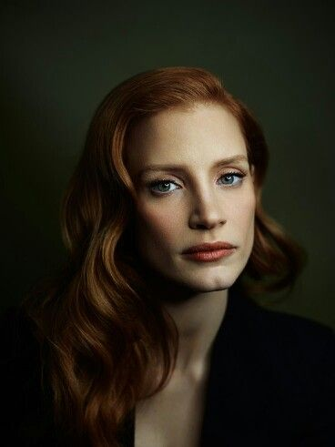

|  |
Luke Pasqualino as Mateo MendozaLonesome and underachieving in his previous life, Mateo shows exstraordinary skills and leadership after being abducted and admitted to the myserious Facility. However, that might not sit well with the local auhorities. |
|  |
Archie Panjabi as Jo AhmadiJo Ahmadi, a mild-mannered middle aged woman, is one of the original group of abductees. Her tragic past that has weighed on her for years, now will serve as a conduct of her inner power. |
|  |
Charlie Rowe as Jasen RipleyJasen, the youngest in the group of abductees, is torn by his need to be validated in his intelligence and natura instincts for self-preservation. He has a lot to learn, but also a lot of potential. |
|  |
Serita N. Marrow as Vivian MongomeryVivian Montgomery, also known by her high school nickname "Mount Viv", is a fit young woman who is haunted by the larger shadow of her past. Although she is insecure because of her weight issues in high school, she is now beautiful and likable with a fiery personality. |
|  |
Jessica Chastain as Alice ZarkinMysterious and undoubltly dangerous Dr. Zarkin, known to the abductees as the Woman, rules the facility with an iron fist. She is ingenious and powerful, and has big plans for the future of the abductees. |